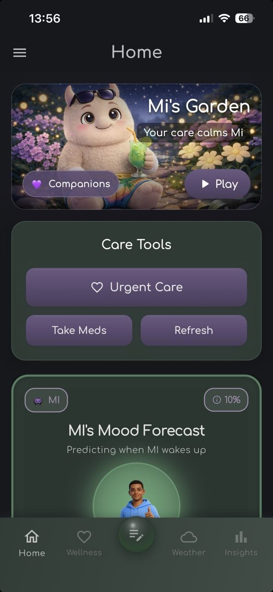
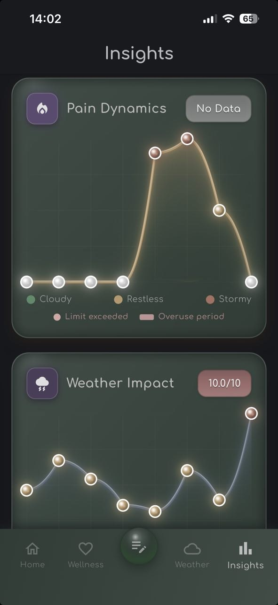

By Rustam Iuldashov
30 years lived experience with chronic migraine | Sources: 14 peer-reviewed references including Cephalalgia (n=596), European Journal of Social Psychology (n=82), PLOS ONE (n=62) | Last updated: June 2026
Medical Review: This content is based on peer-reviewed research from Cephalalgia, European Journal of Social Psychology, British Journal of General Practice, Headache, Journal of Medical Internet Research, and PLOS ONE.
Important Notice: This article is for informational purposes only and does not replace professional medical advice. The author is not a licensed physician or healthcare provider. Migraine Companion is a tracking tool, not a diagnostic device.
Key Takeaways
- Don’t try to master the app on Day 1 — engagement drops most steeply in week one, and only 4% of health app users remain active past 15 days[1]
- Mi uses narrative therapy’s externalization principle: migraine is something you have a relationship with, not something you are[2][3]
- A 30-second daily entry eliminates recall bias — patients mis-report headache frequency by nearly 5 days per month without a diary[7]
- Record headache-free days too — they’re the baseline that makes bad days measurable[7]
- Even 7 days of diary data can reveal trigger patterns invisible to memory — and if they don’t, you’ve established your healthy baseline[10]
- Missing a day doesn’t break the habit — consistency matters more than perfection[5]
You downloaded the app. Maybe mid-attack, phone held at arm’s length because the screen hurt. Maybe at 2 a.m., after one too many spirals of “there has to be something better than this.” Maybe your neurologist mentioned it. Maybe a stranger on Reddit did.
Whatever brought you here — welcome. You don’t need to do everything today.
The biggest mistake people make with health apps isn’t choosing the wrong one. It’s trying to master it in a single sitting, burning out by Wednesday, and never opening it again. The numbers are brutal: engagement with health apps drops most steeply between week one and week two, and only 4% of users remain active after just 15 days.[1] But the apps that survive that cliff share a common trait. They don’t ask too much too soon.
Mi was designed for the worst days, not the best ones. So here’s your first week — one small action per day, each one grounded in science. No overwhelm. No guilt. Just seven days.
Day 1: Meet Mi. That’s All.
Open the app. Look around. Notice the dark garden — deep indigo, soft lavender, muted green. No red anywhere. No flashing notifications. No visual noise. This is a space built for brains that are already overwhelmed.
Find Mi. Your companion.
Mi isn’t a chatbot. Mi isn’t a cartoon mascot with motivational quotes. Mi is built on a therapeutic concept called externalization, developed by psychotherapists Michael White and David Epston.[2] The idea is deceptively powerful: when you separate yourself from your condition — when migraine becomes something you have a relationship with rather than something you are — self-blame shrinks and agency grows.[3][4] “I’m a migraineur” locks the identity in place. “Mi showed up again today” opens a conversation.
That shift changes everything downstream. But today, it’s just an introduction.
Open the app. Meet Mi. Close it. Done.
Research on habit formation confirms why this matters: simpler actions become automatic faster, and early repetitions produce the largest gains in automaticity.[5] You’re not behind. You’re exactly where the science says you should be.

Day 2: Set One Reminder
Pick a time that already has a cue. After brushing your teeth. During morning coffee. When your head hits the pillow. The psychology here is called anchoring — attaching a new behavior to an existing routine dramatically improves the odds of it sticking.[5][6]
Don’t agonize over the perfect time. It can be changed tomorrow. The point is a gentle nudge from Mi once a day. Not a demand. A tap on the shoulder.
Day 3: Your First Entry
Open the diary. Tap whether you had a headache today. Rate the pain. Note any obvious triggers — sleep, stress, weather, food. Close the app.
Under 30 seconds. That’s the whole thing.
But here’s what those 30 seconds are doing that your memory cannot: creating a prospective record. A large study of 596 headache patients found that people who rely on recall instead of daily entries mis-report their migraine frequency by an average of nearly 5 days per month.[7] Fewer than eight migraine days? You’ll probably forget some. More than eight? You’ll likely overcount. The brain smooths, rounds, edits. It compresses bad weeks and stretches good ones. Gently. Consistently. Wrong.
A diary doesn’t have that problem. It just records what happened, when it happened, as it happened.
Your neurologist will need this data eventually. Insurance might need it too. But today, you’re not doing it for them. You’re doing it because a 30-second entry now is worth more than a 30-minute guessing game three months later.
Day 4: Explore One Thing
Just one. Browse the Mi Lab — the Caffeine Profile Quiz, the Breathing Garden, the Migraine Manifesto cards. Or glance at your Analytics tab, which has already begun assembling your first data points. Or read a blog article about something you’ve always wondered about.
You don’t need to complete anything. You’re just looking around. Don’t worry about unlocking or understanding everything today. It will all still be waiting for you tomorrow.
Here’s why it matters later: a Stanford prospective study tracking 178 migraine patients through daily diaries found that decreases in caffeine consumption, higher stress, and the onset of menstruation were all significantly associated with next-day migraine risk.[8] But those patterns only emerged because people tracked consistently over weeks. A single entry reveals nothing. A month of entries reveals your migraine’s playbook. Day 4 is you peeking at where all this data eventually goes.
Day 5: Track the Nothing
This is the most important day so far — because nothing happened.
No migraine. No headache. Maybe even a good day. Open the diary anyway. Record it.
Headache-free days are data. They’re the baseline against which your bad days become visible. They’re what turns a “rough month” from a feeling into a measurable fact. Studies using electronic headache diaries count missing days as headache-free by default,[7] but an actively recorded good day is stronger evidence than silence. It tells your doctor, your insurance company, and yourself: I was paying attention, and nothing happened. That matters.
⚠️ When to Seek Emergency Help
If you experience a sudden severe “thunderclap” headache, new neurological symptoms (vision loss, speech difficulty, weakness on one side), headache with fever and stiff neck, or headache after a head injury — do not wait for a pattern to emerge in your diary. Call your local emergency number immediately.
Mi is a tracking tool, not a diagnostic device. Do not use this article to self-diagnose.
Day 6: Notice the Streak
You’ve entered data for several days now. Look at the calendar view. See the small streak forming — consecutive days of showing up.
You might not think that matters. It does.
Research on habit-based health interventions shows that a simple visual record — the growing chain of completed days — functions as its own motivator, reinforcing the behavior without any external reward.[6][9] No badges needed. No gamification. Just the quiet satisfaction of a pattern you’re building on purpose.
And here’s the reassurance the science offers: Lally’s landmark study on habit formation found that missing a single day doesn’t meaningfully derail the process.[5] The habit curve is steepest right now — early repetitions generate the biggest jumps toward automaticity. You’re not fragile. You’re accelerating.
Day 7: Your First Patterns
Open the Analytics tab. Even seven days of data can surface something.
A pain peak on certain weekdays. A correlation between poor sleep and next-day severity. A medication you reached for more than you realized. A quiet day that coincided with something specific.
A smartphone diary study tracking 62 migraine patients over three months found that trigger factors appeared in 70% of headache events — with stress (57.7%), sleep deprivation (55.1%), and fatigue (48.5%) the most frequent.[10] The diary didn’t create those triggers. It made them visible. It held the data still long enough for the patient to see what had always been there.
And if no clear pattern emerges yet? That’s perfect too. Seven quiet days means you’ve just established your healthy baseline — the benchmark everything else will be measured against.
That’s what Mi does on Day 7. It stops being an app and starts being a mirror.
What it reflects might surprise you — not because the information is new, but because you’ve never had a way to see it clearly before.

What Comes After
You don’t need to be perfect. The study that established the famous “66 days to a habit” finding also found enormous variation — from 18 to 254 days — and confirmed that occasional missed entries don’t meaningfully set you back.[5] Consistency beats perfection. Five entries out of seven beats zero out of seven, every single week.
Over the coming weeks, Mi quietly assembles what your memory cannot: a prospective, structured, exportable record of your migraine life. When you eventually walk into your neurologist’s office, you won’t guess. You’ll hand them a PDF report — Analytics, MIDAS, Medication Safety — and let the data do the talking.
But that’s later.
Today, you’re on Day 7. You have a streak, a handful of entries, and maybe your first glimpse of a pattern you’d never noticed before.
That’s not nothing. That’s the foundation everything else gets built on.
⚕️ Important Medical Disclaimer
This article is for informational and educational purposes only and does not constitute medical advice, diagnosis, or treatment. The author, Rustam Iuldashov, is not a licensed physician, neurologist, or healthcare professional. He is a patient advocate with 30 years of personal experience living with chronic migraine.
All clinical claims in this article are sourced from peer-reviewed research published in indexed medical journals. Study designs and sample sizes are noted where applicable.
Migraine Companion is a self-management tracking tool. It does not diagnose, treat, or prescribe. Always consult a qualified healthcare provider for questions about your individual health or treatment decisions.
This content was last reviewed for accuracy on June 2026.
References
- Baumel A, Muench F, Edan S, Kane JM. “Objective User Engagement With Mental Health Apps: Systematic Search and Panel-Based Usage Analysis.” Journal of Medical Internet Research, 21(9):e14567 (2019). doi:10.2196/14567. Systematic review. n=93 apps.
- White M, Epston D. Narrative Means to Therapeutic Ends. New York: W.W. Norton (1990). Foundational text / Clinical framework.
- Jagatdeb S, Mishra S, Bajpai T, Sen S. “Externalizing the Internalized: Exploring Externalizing Conversations in Narrative Therapy with Adolescents and Young Adults in the Indian Context.” Contemporary Family Therapy, 46:358-370 (2024). doi:10.1177/09731342241238096. Qualitative case study. n=3.
- Thomas ML. “A Narrative Approach to Healing Chronic Illness.” Journal of Christian Nursing, 35(1):30-35 (2018). doi:10.1097/CNJ.0000000000000439. Narrative review.
- Lally P, van Jaarsveld CHM, Potts HWW, Wardle J. “How are habits formed: Modelling habit formation in the real world.” European Journal of Social Psychology, 40(6):998-1009 (2010). doi:10.1002/ejsp.674. Prospective cohort. n=96 (82 analyzable).
- Gardner B, Lally P, Wardle J. “Making health habitual: the psychology of ‘habit-formation’ and general practice.” British Journal of General Practice, 62(605):664-666 (2012). doi:10.3399/bjgp12X659466. Clinical review / Practice guide.
- van Casteren DS, van den Brink AM, Terwindt GM et al. “E-diary use in clinical headache practice: A prospective observational study.” Cephalalgia, 41(11-12):1256-1266 (2021). doi:10.1177/03331024211016523. Prospective observational. n=596 (484 subset). Mean difference: 4.7 ± 5.0 days.
- Holsteen KK, Hittle M, Barad M, Nelson LM. “Development and Internal Validation of a Multivariable Prediction Model for Individual Episodic Migraine Attacks Based on Daily Trigger Exposures.” Headache, 60(10):2364-2379 (2020). doi:10.1111/head.13960. Prospective daily-diary cohort. n=178. 1,870 migraine events.
- Amagai S, Pila S, Kaat AJ, Nowinski CJ, Gershon RC. “Challenges in Participant Engagement and Retention Using Mobile Health Apps: Literature Review.” Journal of Medical Internet Research, 24(4):e35120 (2022). doi:10.2196/35120. Systematic literature review. n=62 studies.
- Park JW, Chu MK, Kim JM, Park SG, Cho SJ. “Analysis of Trigger Factors in Episodic Migraineurs Using a Smartphone Headache Diary Applications.” PLOS ONE, 11(2):e0149577 (2016). doi:10.1371/journal.pone.0149577. Prospective diary study. n=62. 4,579 diary-days analyzed.
- Ramsay SA et al. “Time to Form a Habit: A Systematic Review and Meta-Analysis of Health Behaviour Habit Formation and Its Determinants.” International Journal of Environmental Research and Public Health, 21(12):1658 (2024). doi:10.3390/ijerph21121658. Systematic review / Meta-analysis. n=22 studies.
- Wornom C, Brekke-Kumley B, Luthra T, Smith LJ, Harrington JC. “Self-Reported Triggers Evaluation of High-Risk Dietary and Environmental Factors Preceding Migraine Onset by Using a Mobile Tracking App.” JMIR Formative Research, 9:e68193 (2025). doi:10.2196/68193. Observational / App-based. Large user dataset.
- Chiu MH, Cho E. “User Engagement and Retention in Health Apps.” Cited in: Pei-Lun Hsin et al. PMC (2025). App engagement lifecycle model: confusion → excitement → boredom phases.
- Houle TT, Turner DP, Engstrom MC et al. “Enhancing Migraine Trigger Surprisal Predictions: A Bayesian Approach to Establishing Prospective Expectations.” Headache, 65:e13889 (2025). doi:10.1111/head.13889. Prospective daily diary. n=104.

How We Create Content
- Peer-reviewed sources only. Cephalalgia, European Journal of Social Psychology, British Journal of General Practice, Headache, Journal of Medical Internet Research, PLOS ONE, JMIR Formative Research.
- Study transparency. Study design and sample sizes noted for all clinical references.
- Source verification. All claims backed by numbered references with DOI links.
- Experience + Science. 30 years personal migraine experience combined with peer-reviewed evidence.
- Regular updates. Articles reviewed when significant new research emerges.
- No conflicts of interest. No funding from any pharmaceutical or medical device company.
Start Your First 7 Days Today
Migraine Companion turns 30-second diary entries into the clinical-grade reports your neurologist needs — Analytics, MIDAS, Medication Safety, and CGRP Effectiveness. Your story, told in numbers your doctor can act on.
Last reviewed: June 2026
Next scheduled review: December 2026